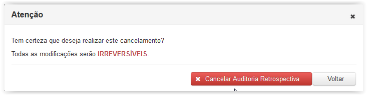

Gera uma lista ítens de GAB auditados, fins de serem cancelados conforme a necessidade.
Ao clicar no ítem de menu à esquerda Cancelar Auditoria Retrospectiva é exibida a tela 'Auditoria Retrospectiva' que apresenta uma lista com os ítens de GAB com o estado 'Conforme' devidamente auditados, conforme imagem abaixo:
Caso o usuário queira cancelar um ítem de GAB auditado, este deve clicar no botão Cancelar e, em seguida, confirmar o cancelamento.

Após a operação de cancelamento será mostrada uma mensagem de confirmação ao usuário, coforme imagem abaixo:
Obs:Somente ítens de GAB sem Lote associado podem ser cancelados. Caso o usuario tente efetuar o cancelamento, a seguinte tela de erro será exibida: